告別波蘭
早上七點多，小鵝就去上學了，這時候我才剛睡醒，迷糊的揮手跟他說掰掰。
休息的時間過得好快，感覺昨天才在夕陽中抵達坡茲南，今天就要在晨曦中離開了，有些依依不捨。
在這邊待了將近一個星期的時間，還有太多值得看的地方沒有去，波蘭的其它城市也很漂亮，將來有機會一定還會再來一遊。

小鵝貼在房間門上的留言，將紙翻過來寫一個大大的『GO！』
我想要回家了，旅行四個多月之後，終於開始想家，想念亂得剛好的房間、隨意發揮的廚房還有可愛的米莎莎。
一口氣拎著所有的大包小包到樓下車房去牽小多，後座夾著一張大猩猩的明信片。
若是在波茲南沒有遇到你們兄弟倆，那又是截然不同的故事了，也許我不會在波茲南停留，現在還在某個地方騎著喀哩喀哩的小多。
謝謝你們的照顧，多謝招待 m(_ _)m
一出宿舍大門，雲層很厚、顏色偏黑，風勢強勁，感覺非常的不妙。
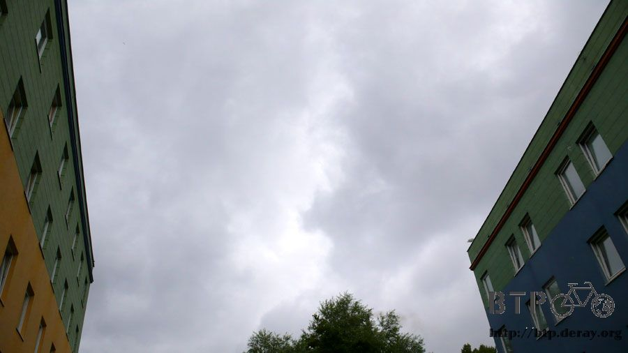
小鵝跟大猩猩都說今天會下雨，氣象報告說是中午的時候， 經過我的解讀之後變成，中午之前離開坡茲南的暴雨範圍就沒事了。
希望雨滴真的到中午才開始落下，給個機會讓我脫離這塊烏雲吧>"<
束帶真是一個方便又好用的東西，支撐架分離的後側背包也用束帶補強起來，這樣一來筆記型電腦又可以放回包包裡。

只上演了一天的，『筆記型電腦的危險攜帶方式』宣告落幕，不用擔心會因為一個坑洞而讓整台電腦飛出去摔爛。
出發的時候還不到早上九點，如果氣象報告準的話，那我還有三個小時可以離開波茲南。

先在城市內尋找聯外的道路，昨天研究地圖的結論是跟著紅色九十二號騎，就可抵達邊境城市，距離約一百九十公里。
這個標示不同於拿著紅色氣球綁辮子的小女生，是揹書包戴帽子的小男生，一樣都是小心兒童，畫得都很可愛。

這個時候雨滴已經開始落下，剛開始是毛毛雨的狀態，離中午還早得很呢，這些雨滴有偷跑的嫌疑，此時我還在市區中研究路標。
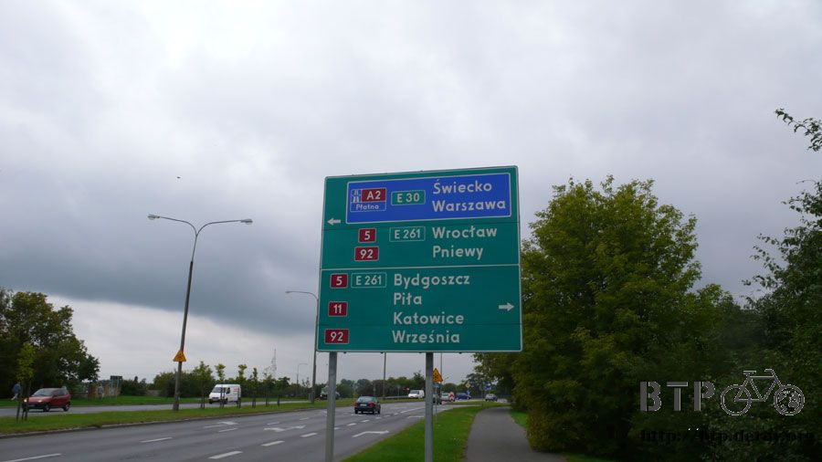
左轉？右轉？
確定找到聯外道路的時候，雨滴就無情的狂洩而下，瞬間全身就溼答答，大雨來得之快令人措手不及，又沒地方可以躲雨。
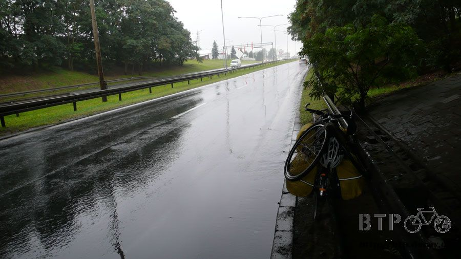
好不容易終於有個天橋可以稍微避一下，大雨一時半刻也沒有停的意思，將包包都套上防水袋準備冒雨前進。
這邊是上坡路段，雨水通通往下匯流到路邊成為積水，路過的大卡車來不及反應，一輛又一輛的快速駛過積水，濺得我全身都是髒水。
出發前穿著整潔乾淨的衣服，才短短一個小時就恢復成髒兮兮的樣貌，鞋子跟襪子也濕了，拖鞋再度登場。
冒著雨離開市區，雨勢隨之減緩，告示牌看久了也有一點心得，白色圈圈中寫著PL跟D，意思就是這邊是波蘭跟德國的邊界。
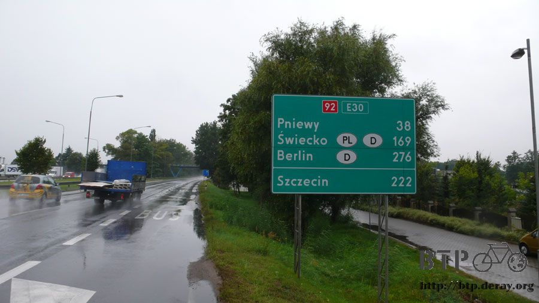
目前距離邊界還有一百六十九公里，距離德國首都柏林則是兩百七十六公里。
今天下雨加上逆風的緣故，想要一天之內騎到邊境有點難度，所以騎多少就算多少吧，剩下的明天再一口氣穿越並且抵達德國。
好低好低的雲，跟田野之間的間隙只有一咪咪而已，整天氣溫都有點冷，最高溫十六度。
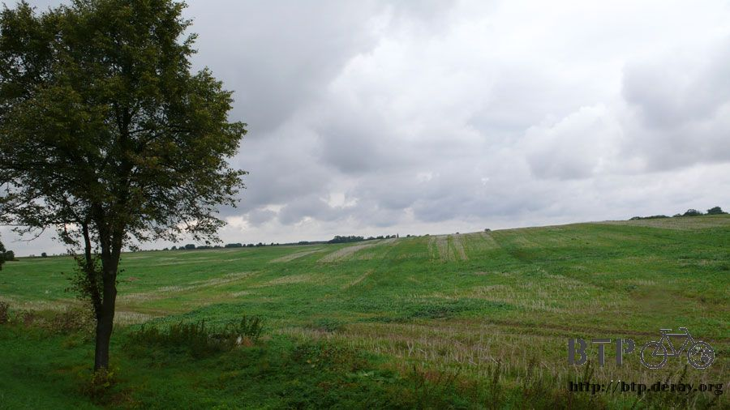
淋過雨又吹著冷風，全身顫抖，下車靠在路邊作一下暖身操，活動筋骨後帶上耳機聽點流行音樂，這樣就不會覺得冷了。
離開波蘭的路上，兩旁的路樹很有送行的感覺，蕭瑟的秋天快要到了，接下來如果要露營的話，睡袋一定要拿出來保暖才行。
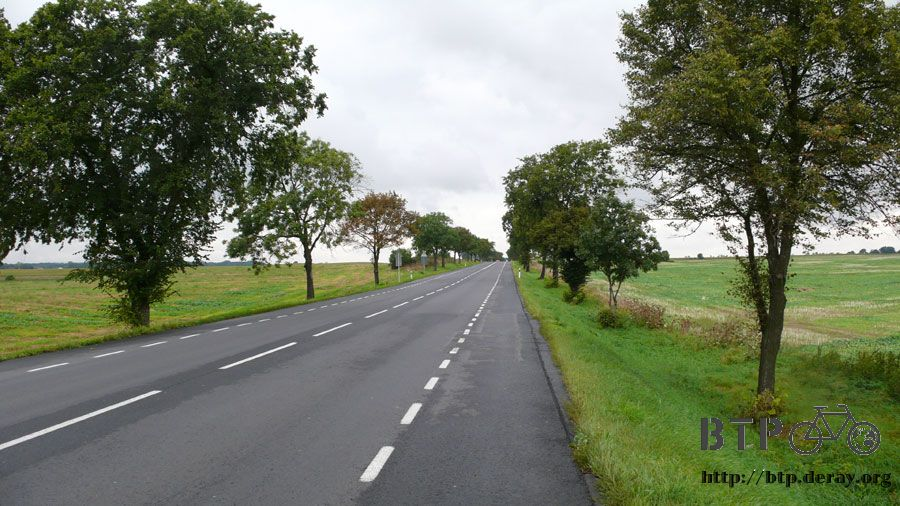
將近中午的時候才騎不到四十公里，但是已經離開波茲南了，進入跟離開都沒看見坡茲南的城市牌子。
包包裡的食物非常空乏，肚子裡也跟著很空虛，該是補給食物的時候了。
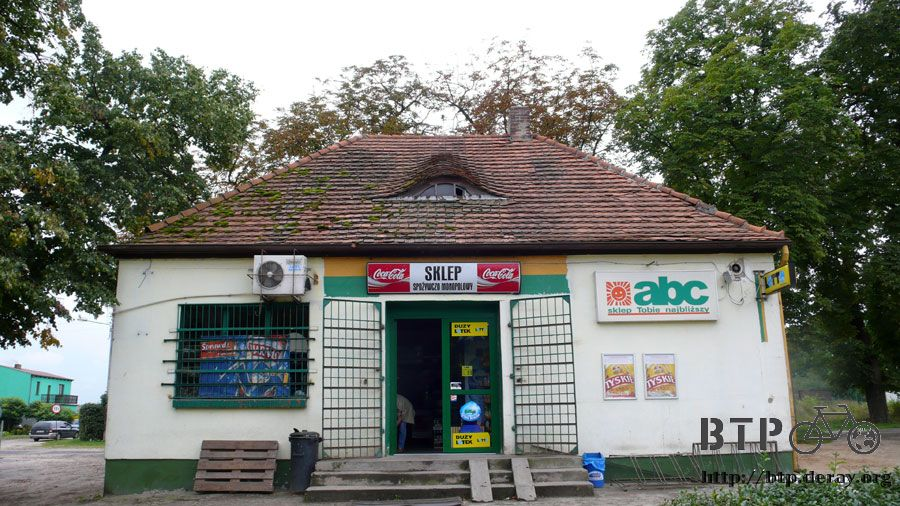
在這間郊區商店買了一條大麵包跟四包不同口味的夾心餅乾，麵包要吃光半條然後才准吃零食，先填飽肚子要緊。

不錯～不錯～越往西邊騎，天氣有越好的感覺，雲還是多得不像話，但顏色已經從黑轉白，還能看見淡淡的藍天。

等防水袋風乾了之後就把它收起來，然後換包包吹著冷颼颼的風將水氣帶走。
身上穿的衣服老早就已經乾了，留下淋雨痕跡的只有眼鏡上的水漬。
天氣涼爽到有點冷的結果就是一整天幾乎不流汗，可惜這些衣服已經被大卡車給濺濕弄髒，不然今天可是能保持乾淨的騎車。
越靠近邊界路旁就越熱鬧，兌幣處、休息站、旅館、餐廳、加油站林立，不愧是要進入歐洲的必經道路。

出了波蘭用的就是歐元，這一路上全部都是兌幣的商家，二十四小時營業，寫著KANTOR就是兌幣處的意思。
匯率沒有波茲南市區來得好，但是商家數量則是爆炸性的成長，終於快到了花歐元的時候了。
到時候不要每消費一次就計算它折合台幣要多少錢，不然什麼東西都買不下手、也吃不下肚。
下午一點半非常愛睏，同時因為早上淋雨騎車跟昨天晚上凌晨兩點才睡的關係。

抵達這間公車站之前我已經幾乎是半夢半醒的騎車，夢境中的畫面跟現實中的景物結合在一起，這樣騎車當然是很危險。
因為打瞌睡而摔車或是被車撞都是很蠢的事情，眼光一直搜尋適合睡午覺的場所，看見這個公車站超級開心。
幾乎封閉式的建築很擋風，窩在裡面非常的溫暖，躺平在長椅上拿個東西當枕頭，沒幾秒鐘就進入熟睡的狀態。
在這裡足足睡了一個半小時，精神終於好了一點，接著往下騎的時候天空又陰暗了一些，真懷念陽光普照的感覺。
除了兌幣處那些商家之外，沿路上都是賣木頭風車跟石頭雕刻的攤販。

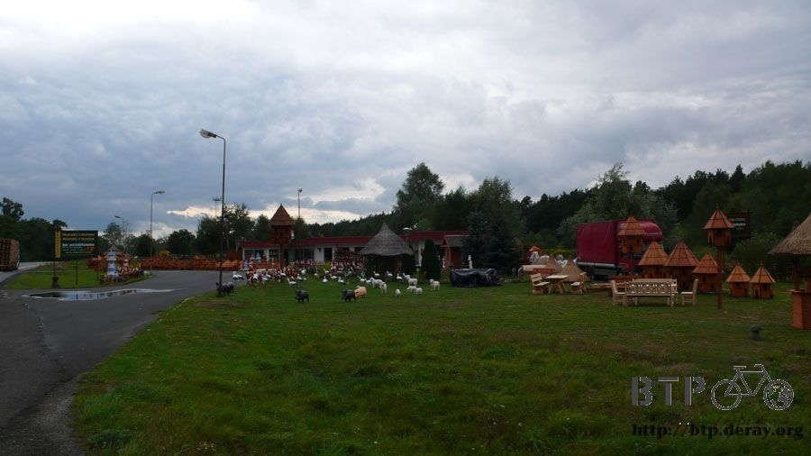
草地上一堆雞羊豬牛，全部都是石雕的，其它木製的東西也很多，價錢不明，反正也不會去買。
烏雲的範圍到這邊就很乾脆的嘎然而止，一點也不拖泥帶水，分界乾淨又漂亮，過了這個上坡之後天空就沒那麼遮蔽陰暗。

騎到這裡的時候有點嚇一跳，因為前面五十公尺才掛著『小心瘋牛』的警告牌。
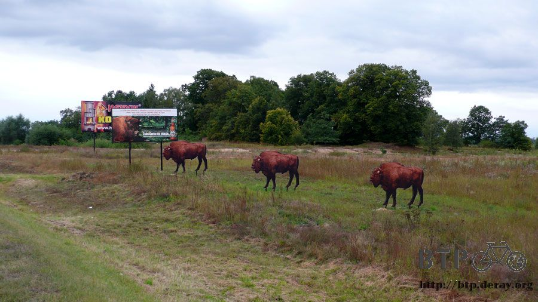
別被眼睛給蒙蔽了，這些牛隻都是紙板作的，包含那一個小心瘋牛的警告牌，都是為啤酒廣告所鋪的梗。
看起來就是舒適的旅館，還有附設餐廳，兩顆星星的價錢應該還算適中，畢竟現在還是在波蘭，再貴也沒有歐洲貴。

旅行久了，跟旅館的緣份變得越來越薄，看著這棟曾經是理想中的避風港，踩下單車踏板尋找現實中的過夜處。
排排站的迎賓樹，感覺波蘭很不想讓我走，待了那麼多天都是超級好天氣，今天一出發就下雨，逆風也吹個不停，別留我呀～

看起來好好吃的餐廳，底下有一個歐元的標誌，它同時代表這間餐廳可以用歐元結帳，並且有兌幣的服務。
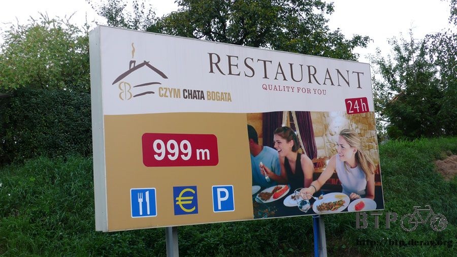
兌幣的匯率都很差，而且幾乎每一家的匯率都是一樣的，看來這條路上的生意很好做，沒必要互相競爭削弱賺頭。
好奇心使然，進去看了一下兌幣處長什麼樣子，除了歐元之外，東歐小國的錢也可以換。
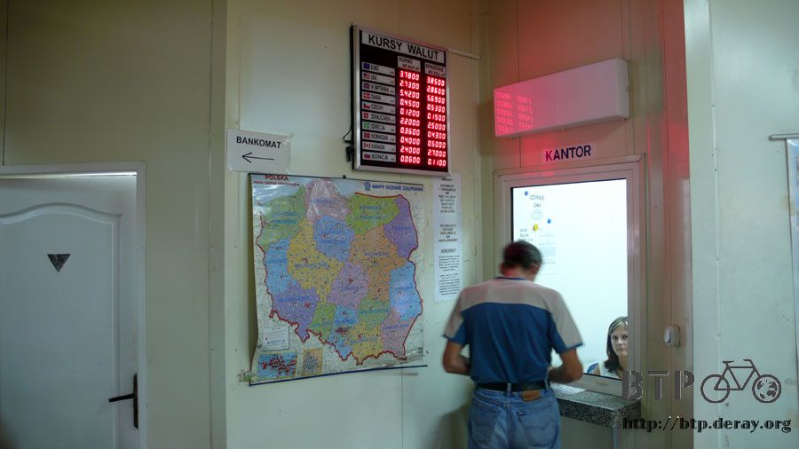
身上的茲羅提還夠花，接下來只要淌血的將美金換成歐元，計算花費撐十天到巴黎就好了。
如果沒有什麼意外的話，接下來這一段路不會有住旅館的可能性，吃大餐是我微小的希望，但要看荷包同不同意。
下午六點，終於停在一間超大的加油站，這邊很少獨棟經營的店家，幾乎都是用休息區的規模來規劃。

這邊也不例外，外觀看起來平凡無奇，但是內部豐富得很驚人，店門口擺了很多的油品，不知道哪些是汽化爐可以用的？

手上剛好沒有多的寶特瓶可以去裝汽油，而且汽油好貴喔，一公升要台幣五十元，真是買不下手。
在休息區裡頭參觀，這邊有超級大的餐廳～人潮洶湧的客源～連電動玩具都有，文明歐洲、繁榮歐洲，敬佩敬佩。

拎著空水壺打算去廁所裝水順便洗把臉，連廁所都豪華得令人咋舌=..=
洗烘衣機、淋浴間這些全部都有(使用者付費)，而且這些休息區通通都是二十四小時營業，找一張椅子坐下來也能耗一個晚上。
屋裡有舒服的暖氣、免費的電力供應，只要想出小多跟如何安置的對策，那麼過夜處一路上都有，還可以讓我挑那一間比較合意。
想在天黑之前盡可能往國境移動，明天就不用騎太遠才能到邊境，同樣是歐盟國家，從波蘭進入德國的通關手續應該會輕鬆很多吧？
八點左右發現這棟空屋，外觀有些破損但屋頂還在，晚上如果天氣又轉壞的話還能遮風避雨。
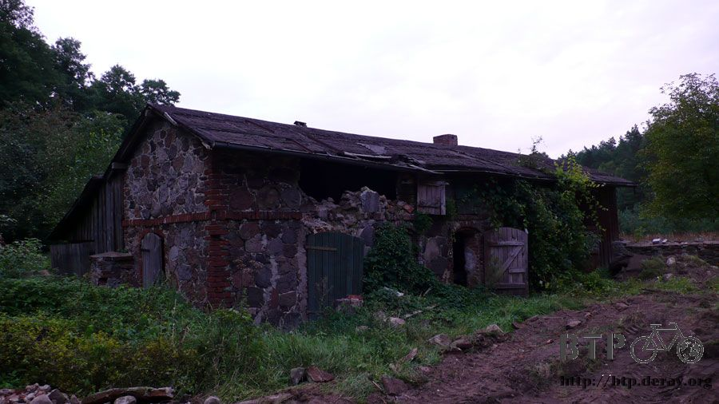
牆壁上爬滿藤蔓，門口有輪胎印，但是感覺這邊應該沒有人會經過才是，先查看一下環境再作決定。

那一扇打開的門裡面就是這樣，狹小的空間像是酒窖，有一張木頭桌子跟兩張單人床的床墊。
居然還有床墊呢？如果睡這邊的話，夜裡就可以睡在床上，看起來是很完美的露營場所，可是某個地方總覺得怪怪的....
這邊有點恐怖電影場景的味道，像這樣的小房間隔壁也有一間，打開的時候讓我嚇一跳，隔壁跟這裡很像，但是擺著一雙乾淨的白色布鞋。
為什麼這種地方會有一雙乾淨的鞋子呢？跟周遭的環境完全不搭嘎呀？
腦袋不禁開始幻想，曾經有個旅行者在這露營，半夜的時候被壞人給綁走，行李什麼的也被搶光，只剩下睡前脫下的鞋子還在原地等著主人回來。
想到這邊不得不佩服自己想像力的豐富，同時加速逃離這個地方，好像逃過一場劫難一樣，有點膽顫心驚的繼續往西邊騎。
像剛才那樣的空屋是沿路上難得一見的荒涼景色，騎不到半個小時又進入了休息區林立的區域。
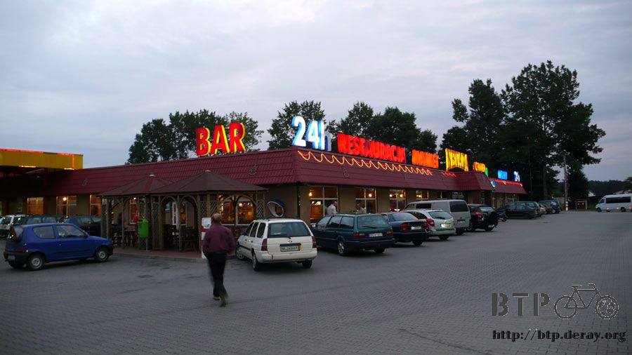
漸漸黑暗的天空中霓虹燈開始亮起來，二十四小時營業的招牌很吸引人，光是用看的就有種溫暖的感覺。
牽著小多沿著大片的玻璃窗走過，裡面是溫暖的黃色燈光和享用美食的人們，口水都快要流出來。
繞著主要建築兜了一圈，心裡大概有個底，今天打算在這邊找地方窩一晚上，反正是二十四小時營業的，沒可能被趕走。
停車場停滿了十八輪大卡車，加油站也規畫得很大一座，相較之下這棟茅草小屋就顯得很迷你，雖然它已經很大了。

裡面有乾淨的地面跟簡單的桌椅擺設，而且除了我之外沒有任何人進出，大家一出車子就往餐廳的方向走，一出餐廳就回車子上。

晚上在這棟免費的茅草屋地上睡了一大覺，不到九點就躺平了，白天的時候就很冷颼颼，入夜之後果然氣溫更無情的直降。
還好有帳篷跟睡袋的保溫，小多倚靠在圍籬上，我睡在小多的輪前，今天是在波蘭的最後一夜了。
之前在其它的國家，沿路都受當地人的照顧，到波蘭之後受到最多照顧的則是在當地唸書的台灣人。
小鵝、大猩猩跟用功念書的大家，這幾天謝謝你們的細心照顧，祝大家都能早日學成歸國 :D
繼續閱讀：9.1 彼岸 回家的路上
波蘭-茲羅提－ 1：12 台幣
8.31 |
總計：17.5元 |
商店麵包、餅乾四包12.2元、加油站兩公升可樂5.3元 |
|